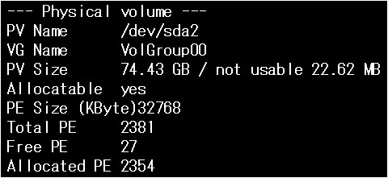
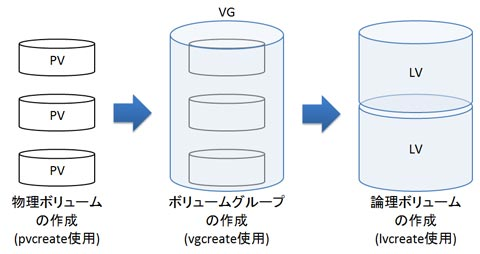
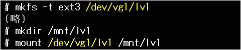
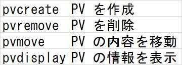
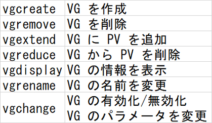
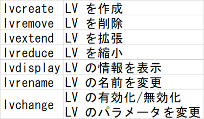
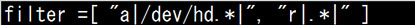

- 問題ID : 21985 論理ボリュームマネージャの設定と管理
- 履歴

正解
pvdisplay
解説
LVM ではハードディスク・パーティションなどの物理的な記憶デバイスを、物理ボリューム (PV) と呼ばれるデータ領域として扱います。
指定したデバイスを PV として初期化するには、pvcreate コマンドを使います。
pvdisplay コマンドに作成された PV を指定すると、その詳細情報を見ることができます。
この問題では、得られた出力の１行目を見ると「--- Physical volume ---」とありますので、PV に関する情報を出力していると判断できます。
PV の情報を表示するコマンドは
・pvdisplay
です。
その他の選択肢について解説します。
・vgdisplay
引数にボリュームグループ (VG) 名を与えることで、VG に関する情報を得ることができるコマンドです。
ここではデバイスファイルを指定し、PV に関する情報を得ているので、誤りです。
・lvdisplay
引数に論理ボリューム (LV) のデバイスファイルを与えることで、LV に関する情報を得ることができるコマンドです。
ここでは PV に関する情報を得ているので、誤りです。
・pvinfo
・vginfo
・lvinfo
存在しないコマンドですので、誤りです。
LVM に関連したコマンドは以下の参考に掲載する通り多数あります。
以下の表を参考に、コマンド名とその役割の対応関係をおさえておきましょう。
参考
LVM
(Logical Volume Manager) は、物理的な記憶デバイスの領域（物理ボリュームと呼ぶ。Physical Volume
の頭文字を取り PV と略す）を複数まとめてひとつの大きな仮想的な領域（ボリュームグループと呼ぶ。Volume Group の頭文字を取り VG
と略す）とし、そこから仮想的なパーティション領域（論理ボリュームと呼ぶ。Logical Volume の頭文字を取り LV
と略す）を切り出すことで、従来の物理的なパーティションを用いた方法よりも柔軟に記憶領域を管理することができるようにする仕組みです。

LVM を構成する手順は以下の通りです。
1. fdisk コマンドによる LVM 用パーティションの作成
2. pvcreate コマンドによる PV の作成
3. vgcreate コマンドによる VG の作成
4. lvcreate コマンドによる LV の作成
5. mkfs コマンドによるファイルシステムの作成
6. ファイルシステムのマウント
LV のデバイスファイルは /dev/VG名/LV名 となります。
作成した LV を実際に使うためには、このデバイスファイルを指定してファイルシステムを作成し、マウントを行います。

なお、create とつくコマンドの他にも、多くの pv, vg, lv 系コマンドが存在します。
物理ボリューム (PV) 関係のコマンド

ボリュームグループ (VG) 関係のコマンド

論理ボリューム (LV) 関係のコマンド

以上のように pv, vg, lv の３種類にコマンドを分けることができます。
ここで、PV は Physical Volume（物理ボリューム）、VG は Volume Group（ボリュームグループ）、LV は Logical Volume（論理ボリューム）の略なので、まずこの日本語・英語・略称の対応を覚えます。
すると、その後ろには create, remove などの英単語が続くので、単語の意味から動作を連想することができるはずです。
・lvm.conf（LVMボリュームの検索フィルタ）
上
記のように作成されるLVMのボリュームですが、システム起動時にどの物理ブロックデバイスをLVMボリュームとして検索対象とするかを、正規表現を用い
て指定することができます。ボリューム検索にはvgscanというVGを検索するコマンドが動作しますが、これに対するフィルタをlvm.confに記載
することになります。
以下はlvm.confの設定例です。
全てのIDEデバイスを検索し、それ以外のブロックデバイスを除外します。
